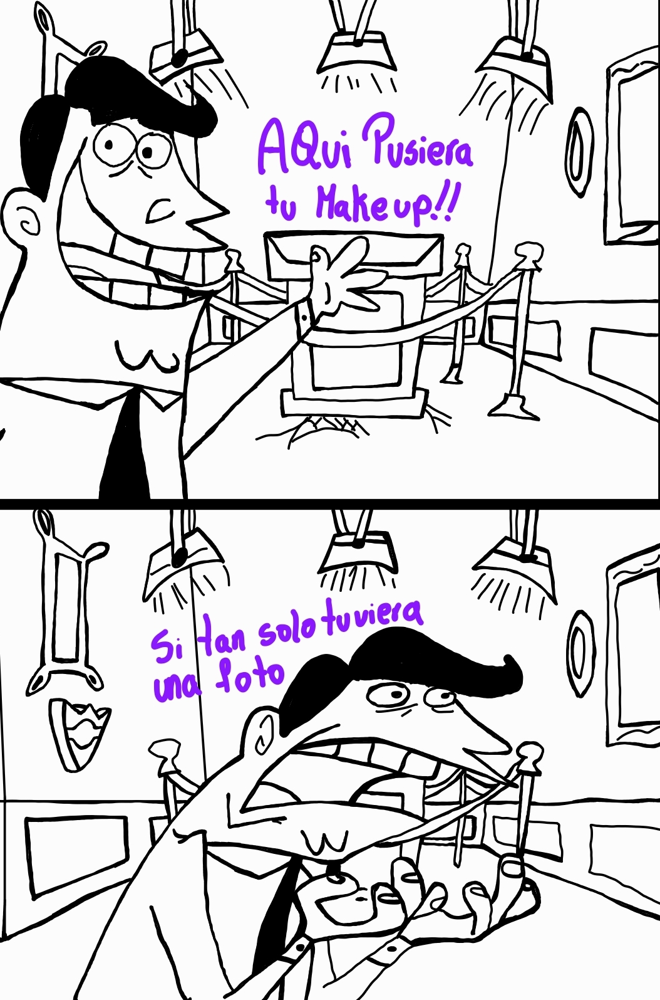

Día 2: Tu marca personal
Vamos con el día dos, y hoy la temática será muy especial porque siguiendo tu carrera hoy veremos tu marca personal JAJAJ, cosas que digo uff Mabel, definitivamente hay cosas que tienen una esencia 100% tuya que directamente se me viene tu nombre a la mente al pensar en ellas.
Empecemos con lo más notable, tu costumbre de repetir mil veces las palabras en tus audios como el nonononononononononon, obviamente también tenemos el sisisisisisisis, hoy me levanté tardísimo tardísimoooo, lo odio lo odiooo JAJAJAJAJA. Siento que es muy tú llenar la mitad del audio con una repetición de palabras y la otra mitad con la información JAJAJ, eso hace a los audios muy tuyos, tu marca personal sonora. También si nos vamos un poco más allá siento que tus frases más recurrentes son "estoy con las justas de tiempo" o un "me levanté tardísimooo". Lo que es más gracioso de esto es que siempre eres puntual, siempre llegas a la hora que es a tu trabajo por más tardisiiiiimo que te hayas levantado ese día, entonces no sé si eres tú o tienes a Toretto de Uber siempre JAJAJAJ.
Otra parte de tu marca personal son tus makeups increíbles, icónicos, bellos, con los que vas al trabajo porque siempre los haces muy lindos independiente del estilo que decidas ocupar ese día.

Pero tu marca personal va mucho más allá de las frases que dices todos los días o las palabras que repites a todo dar, tu verdadera marca es lo inmensamente expresiva que eres y el cómo vives las emociones. Si estás feliz, contenta (y sin periodo), lo irradias por completo, eres como un sol, una estrella de felicidad que irradia rayos de alegría JAJA, porque tienes esa habilidad de contagiar tu felicidad. Pero también cuando algo te afecta o estás profundamente triste (o cuando estás con periodo también JAJAJ), lo vives con todo tu corazoncito. Siento que esa forma tan tuya de vivirlo todo sin filtros es una parte fundamental de quién eres.
Y eso se nota en todo lo que haces, en tu trabajo, en cómo disfrutas y sientes la música, en la pasión que le metes a los detalles y regalitos que haces y sobre todo en lo mucho que te importa la gente a la que consideras cercana. Esa intensidad para querer, sentir y para estar ahí es tu mejor marca personal.
Espero que nunca pierdas esa esencia tan tuya... nos vemos mañana. 💜